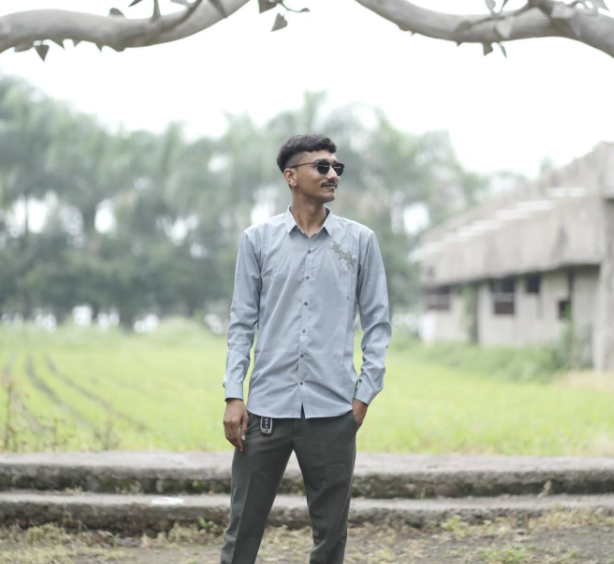

01
HTML
Structuring pages with semantic, accessible markup.
Hi, I'm Jiyansh. I’m building a thoughtful foundation in software engineering, one clean interface and one new idea at a time.

I’m Jiyansh, an early-career software engineering professional with six months of experience at TOPS Technologies Pvt. Ltd. I enjoy turning ideas into clear, usable web experiences and strengthening my programming fundamentals along the way.
My current toolkit spans front-end foundations and programming in C and C++. I’m always looking for the next practical problem to learn from.
Every project, lesson, and line of code is part of the process.
A growing toolkit, grounded in web essentials and programming fundamentals.
Structuring pages with semantic, accessible markup.
Styling responsive layouts with care for the details.
Building consistent, responsive interfaces efficiently.
Practicing programming fundamentals and problem solving.
Exploring structured programming and core concepts.
Experimenting with utility-first styling and modern CSS.
Learning areas that keep me curious and moving forward.
Practicing clean structure, visual hierarchy, and layouts that adapt to smaller screens.
Exploring reusable patterns and consistent styling with a responsive framework.
Building confidence with core programming concepts through small exercises.
Continuing to explore C++ syntax, structured thinking, and foundational concepts.